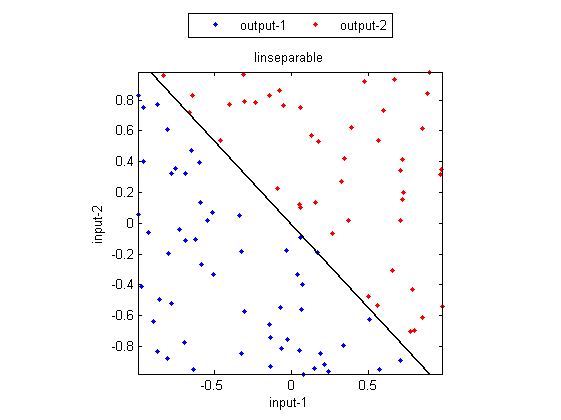
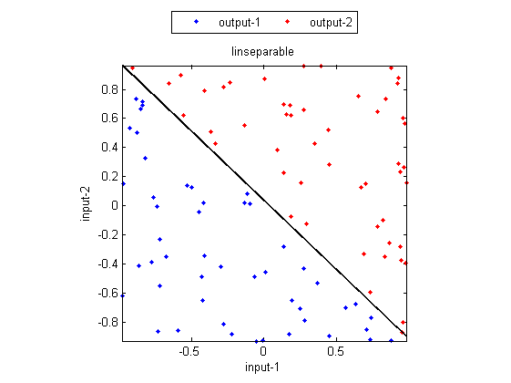
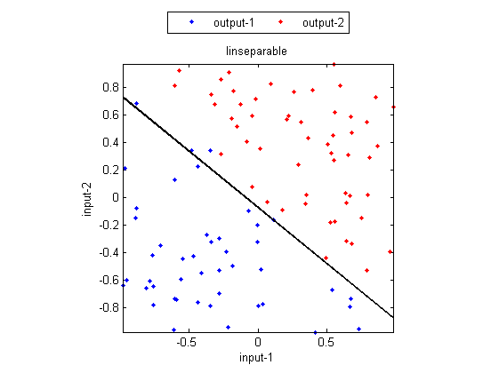

Linear Classifier (LC)
The linear classifier uses a linear function to map feature vectors into a hyperplane. If the hyperplane is higher than a threshold, then the corresponding feature vectors belong to one class. Otherwise, they belong to the other class. By nature, the linear classifier is suitable for 2-class problems.
Contents
A basic example via sequential learning
We can use lincTrain.m to train a linear classifier by such sequential learning, as shown below.
DS=prData('linSeparable'); trainPrm=lincOptSet('method', 'sequentialLearning', 'maxIter', 2000, 'animation', 'yes'); [coef, recogRate]=lincTrain(DS, trainPrm); fprintf('Recog. rate = %.2f%%\n', 100*recogRate);
Iteration=200/2000 Iteration=400/2000 Iteration=600/2000 Iteration=800/2000 Iteration=1000/2000 Iteration=1200/2000 Iteration=1400/2000 Iteration=1600/2000 Iteration=1800/2000 Iteration=2000/2000 Recog. rate = 100.00%
Batch learning
It is also possible to have batch learning for linear classifiers. An example is shown next.
DS=prData('linSeparable'); trainPrm=lincOptSet('method', 'batchLearning', 'animation', 'yes', 'printInterval', 30); [coef, recogRate]=lincTrain(DS, trainPrm); fprintf('Recog. rate = %.2f%%\n', 100*recogRate);
Iteration=30/1000, recog. rate=49% Iteration=60/1000, recog. rate=49% Iteration=90/1000, recog. rate=49% Iteration=120/1000, recog. rate=49% Iteration=150/1000, recog. rate=49% Iteration=180/1000, recog. rate=47% Iteration=210/1000, recog. rate=40% Iteration=240/1000, recog. rate=93% Recog. rate = 100.00%
Use of the least-squares method
It is also possible to apply the least-squares method for linear classifiers. Since the LS method only minimizes the regression error, usually the corresponding classification accuracy is not as good as the above mentioned sequential or batch learning. However, the LS method is very efficient, so it is possible to apply the LS method once to have the initial parameters promptly, and then apply batch learning to further improve the recognition rate. The following example demonstrates the use of the LS method to minimize the regression error.
DS=prData('linSeparable'); trainPrm=lincOptSet('method', 'minRegressionError', 'animation', 'yes'); [coef, recogRate]=lincTrain(DS, trainPrm); fprintf('Recog. rate = %.2f%%\n', 100*recogRate);
Recog. rate = 96.00%
Copyright 2011-2012 Jyh-Shing Roger Jang.